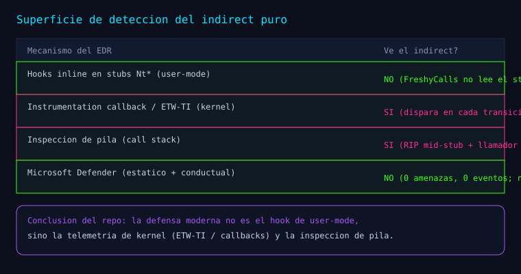

Serie: Kagemusha
Kagemusha — Visibilidad y evasión: Defender, instrumentation callbacks (E2), firma de pila (E3) y CET (E4c)
Kagemusha — Visibilidad y evasión
Esta entrada documenta la parte más interesante de la investigación: qué ve realmente un EDR cuando usas un indirect syscall, y qué queda por atacar. Tal como está registrado en el README.md y en docs/research/.

Detección por Microsoft Defender (del README y experimento-defender.md)
Entorno: Windows 11, Microsoft Defender activo (tiempo real ON, AMRunningMode=Normal), motor 1.1.26090.9, firmas 1.459.471.0.
Método:
- Estático:
MpCmdRun.exe -Scan -ScanType 3 -FilesobreKagemusha.exeyKagemusha_tests.exe. - Conductual: ejecución del demo, del CLI y de la suite completa (que incluye tests que
parchean ntdll en memoria: hooks E9 y FF25).
- Monitorización de
Get-MpThreatDetection,Get-MpThreaty del log
Microsoft-Windows-Windows Defender/Operational.
Resultados (del documento):
| Prueba | Resultado |
|---|---|
| Escaneo estático de ambos binarios | 0 amenazas |
| Suite completa (incl. parcheo de ntdll) | 166 PASS, exit 0 |
| Detecciones / eventos tras ejecutar | ninguna |
| Historial de amenazas | vacío |
¿Defender inline-hookea Nt*? | No — 488/488 stubs con prólogo limpio |
Interpretación (del documento): "Defender en Windows 11 no inline-hookea los stubs Nt*; su detección se apoya en ETW-TI y callbacks de kernel, no en hooks de user-mode." Y: "Resultado de evasión: Defender (estático y conductual) no detectó a Kagemusha."
Instrumentation callbacks / ETW (E2, test T25)
Objetivo (del documento): comprobar si un mecanismo de EDR moderno observa los indirect syscalls, a diferencia de los hooks inline (que FreshyCalls evita).
Referencia: x86matthew/InstrumentationCallbackSyscallLogger (MIT). Se portó la técnica a Kagemusha como src/core/instrument.c (con atribución en el código) y modo CLI --instrument; se añadió el test T25 (IC1 registra, IC2 verifica observación).
Resultado (del documento): con el callback activo, Kagemusha ejecuta su catálogo y el callback captura cada indirect syscall:
NtClose(0xDEADBEEF, ...) (ret: 0xC0000008)
NtQuerySystemInformation(0x0, ...) (ret: 0x0)
NtQueryInformationProcess(0xFFFF... ) (ret: 0x0)
NtQuerySystemTime(0x...F660, ...) (ret: 0x0)
NtYieldExecution(0x6, ...) (ret: 0x40000024)Test T25: IC2 confirma After >= Before + 5 → los 5 indirect syscalls fueron observados.
Hallazgo central (del documento):
"Hooks inline …: Kagemusha los evita … Instrumentation callbacks (y por extensión ETW-TI): se disparan en el kernel en cada transición de syscall del proceso, así que ven el indirect syscall igual que uno normal. La inmunidad a hooks inline no protege aquí."
Y: "la defensa moderna contra indirect syscalls no es el hook de user-mode, sino la telemetría de kernel / instrumentation callback / ETW-TI."
Firma residual del indirect (E3, test T26)
De docs/research/experimento-e3-callstack.md y docs/evidencias/e3.txt. Pila capturada en el momento del syscall (RIP en el gadget de ntdll):
Child-SP RetAddr Call Site
00000023`ae0ff838 00007ff6`355838b9 ntdll!NtClose+0x12 ; RIP a mitad de stub
00000023`ae0ff840 00007ff6`355817c2 Kagemusha!NtClose_I+0x29 ; llamador = nuestro modulo
00000023`ae0ff880 00007ff6`355820a0 Kagemusha!M4_Execute+0x82
00000023`ae0ff910 00007ff6`35584fcf Kagemusha!main+0x130
(Inline Function) --------`-------- Kagemusha!invoke_main+0x22
00000023`ae0ff950 00007ffc`4680cd87 Kagemusha!__scrt_common_main_seh+0x10f
00000023`ae0ff990 00007ffc`4848caec KERNEL32!BaseThreadInitThunk+0x17
00000023`ae0ff9c0 00000000`00000000 ntdll!RtlUserThreadStart+0x2cSeñales residuales (del documento):
- RIP a mitad de stub: el syscall entra en
ntdll!NtClose+0x12, no en la entrada
(NtClose+0x0). Formalizado en el test T26 / E3a: el gadget siempre está desplazado respecto a la entrada del stub.
- El llamador es un módulo de usuario (no-Microsoft, sin firmar): la pila muestra
Kagemusha!NtClose_I llamando directo a un Nt*. "Es el tell más fuerte."
- Pila coherente y "walkeable": no está rota;
kla resuelve entera (el indirect puro no
oculta la pila; eso requeriría stack spoofing, fuera de v1).
Conclusión (del documento):
| Mecanismo del EDR | ¿Ve el indirect? |
|---|---|
Hooks inline en stubs Nt* | No |
| Inspección de pila / ETW-TI / callbacks de kernel | Sí (RIP mid-stub + llamador de usuario) |
Evasión bajo CET / Shadow Stack (E4c, test T27)
De docs/research/experimento-e4c-cet-spoofing.md.
Objetivo: comprobar que el stack spoofing clásico (ROP / ret a frames falsos, estilo SilentMoonwalk) no es viable con CET / Shadow Stack activo — el caso de este equipo.
Método: KageShadowStackProbe (src/asm/syscalls.asm) hace lea rax, target; push rax; ret, es decir un ret cuya dirección no está en el shadow stack; modo CLI --cetprobe; test T27 (lo lanza en un proceso hijo y comprueba el código de salida).
Resultado:
cetprobe exit=0xC00004090xC0000409 = STATUS_STACK_BUFFER_OVERRUN / violación de Control Protection (#CP). Del documento: "Sin CET, el probe saltaría a KageSsRetTarget y saldría con 0."
Conclusión (del documento): el spoofing de pila basado en ret/ROP falla bajo CET (el ret debe coincidir con el shadow stack; los frames falsos no están ahí). Un enfoque CET-safe no puede depender de ret/ROP; caminos válidos: call-based (usar call legítimos, que sí empujan al shadow stack) o VEH-based (LayeredSyscall / RustVEHSyscalls, desde KiUserExceptionDispatcher). "Esto es lo específico y valioso de E4c: evasión de pila compatible con CET, no el ROP clásico."
Reproducir (del documento):
Kagemusha.exe --cetprobe :: #CP (0xC0000409) si CET activo
Kagemusha_tests.exe :: T27Esto conecta con la Fase 7 (T22): el trampolín jmp es CET-safe por diseño, pero intentar cerrar la firma de pila con un ret/ROP clásico rompe bajo shadow stack.
E4c/2a — CET permite la redirección de RIP vía VEH (test T28)
De docs/research/experimento-e4c2a-veh-rip.md.
Método: modo Kagemusha.exe --vehprobe: AddVectoredExceptionHandler → RaiseException(0xE0000002) → el handler VEH modifica el contexto (Rip = &KageVehResumeTarget y Rsp a una pila propia) → KageVehResumeTarget marca la bandera y TerminateProcess(0). Test T28 (proceso hijo).
Resultado:
vehprobe: RaiseException + redireccion de RIP...
exit=0Del documento: "La redirección se ejecutó (se alcanzó KageVehResumeTarget) pese a CET → salida limpia 0." (Nota de la iteración: el primer intento dio AV en el teardown de ExitProcess; se resolvió con TerminateProcess.)
Conclusión (del documento): "CET no bloquea la redirección de RIP por contexto de excepción. Por tanto, el enfoque CET-safe es viable."
E4c/2b — CET vs stack spoofing (hallazgo)
De docs/research/experimento-e4c2b-status.md y experimento-e4c2b-cet-vs-spoofing.md. Se integra el mecanismo probado de WKL-Sec/LayeredSyscall (modo --refspoof): funciona sin /CETCOMPAT pero da #CP (0xC0000409) con /CETCOMPAT. Conclusión: el stack spoofing clásico es incompatible con CET. Detalle completo en la entrada Evasíon en acción: E4b, build dual y CET vs spoofing.
Síntesis (del README, secciones E2/E3/Defender)
| Mecanismo | ¿Ve el indirect puro? |
|---|---|
| Hooks inline (user-mode) | No |
| Instrumentation callbacks / ETW-TI | Sí |
| Inspección de pila / callbacks de kernel | Sí |
| Microsoft Defender (estático + conductual) | No (0 detecciones) |
La investigación deja claro el mapa: el indirect puro reduce la superficie frente a hooks inline, pero deja firma en la pila, y la telemetría de kernel (ETW-TI / callbacks) sí lo ve.
Resultados (del README)
- 178 PASS (stealth) / 182 PASS (CET) ·
Kagemusha_tests.exe(exit 0). (Resultados por build, delREADME.md.) - Módulo sin
syscall:verify.ps1→ 0 instrucciones. - Defender: 0 amenazas en escaneo estático; 0 eventos conductuales.
Reproducir (del README)
bin\Kagemusha.exe --instrument :: vuelca cada syscall observado por el callback (E2)
bin\Kagemusha.exe --cetprobe :: prueba de stack spoofing bajo CET (E4c)
bin\Kagemusha_tests.exe :: T25, T26, T27Cómo sigue la serie
Toda la serie (navegable): Kagemusha.
Bibliografía y referencias
- Fuentes primarias:
README.md,docs/research/experimento-defender.md,
experimento-instrumentation-callback.md, experimento-e3-callstack.md, experimento-e4c-cet-spoofing.md, docs/evidencias/e3.txt, src/core/instrument.c.
- x86matthew — InstrumentationCallbackSyscallLogger (
github.com/x86matthew/InstrumentationCallbackSyscallLogger). - Microsoft Learn — ETW-TI y Control-flow Enforcement Technology (CET).
Aprender a romper para poder defender.